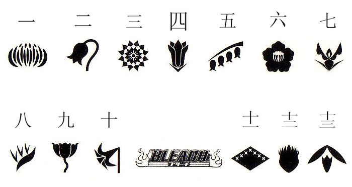

Poemas

Poemas de Bleach - Tite Kubo
Volumes e Poemas
”As pessoas só conseguem manter a esperança, porque seus olhos são incapazes de enxergar a morte”.
Volume 03: "Memories in the Rain"
”Se eu fosse a chuva, poderia unir meu coração ao de outro alguém? Assim como ela une os eternamente distantes céu e terra”.
Volume 04: "Quincy Archer Hates You"
”Quando nos encontramos nos unimos, como gotas d’água, como planetas.”
“Quando nos encontramos nos repelimos, como imãs, como as cores da pele.”
Volume 05: "Rightarm of the Giant"
”Se eu empunhar a espada, não posso te proteger.”
“Mas se eu empunhar a espada, não posso te abraçar.”
Volume 06: "The Death Trilogy Overture"
”Em verdade, para nós não existe ‘destino’. Somente aqueles que, embebidos em medo e ignorância,
perdem o passo e caem no rio lamacento que chamam de ‘destino’.”
Volume 07: "The Broken Coda"
”Nós não devemos derramar lágrimas pois, para o coração, essa é a derrota do corpo carnal.Não há prova mais contundente de que nossas emoções estão além de nosso controle”.
Volume 08: "The Blade and Me"
”Uma vez enferrujado, não consegue mais abrir caminho. Uma vez sem controle, rasga a si próprio em pedaços.
Sim, o orgulho se parece com uma espada”.
Volume 09: "Fourteen Days for Conspiracy"
”Sim, mesmo com olhos abertos sonhamos voar através dos céus”.
Volume 10: "Tatoo on the Sky"
”Esticando as mãos Atravessamos as nuvens e cruzamos os céus. Contudo, mesmo se capturássemos a Lua e Marte
Ainda não alcançaríamos a verdade”.
Todos os Direitos Reservados